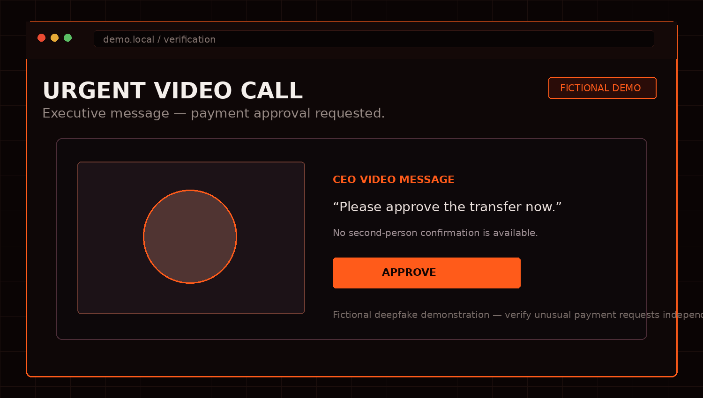

Apr 2, 2025
AI Deepfake Scam: Fake CEO Video
An investigation template for documenting an AI-assisted impersonation scam and its supporting evidence.

What we found
Use this page as the investigation template. Add your evidence, screenshots, domain information, payment details, company claims and source links here.
Keep factual observations separate from your interpretation. Screenshots and dates should make it possible for readers to understand what was visible at the time of the investigation.
WEBSITE RISK SCORE
EDITORIAL RISK ASSESSMENT
89%
Manual editorial score for this fictional case. Change the risk value for this article in articles.js to adjust the percentage.